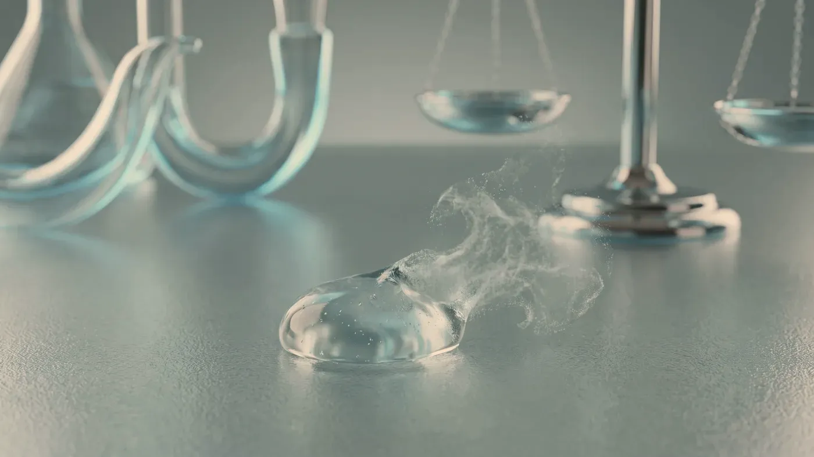
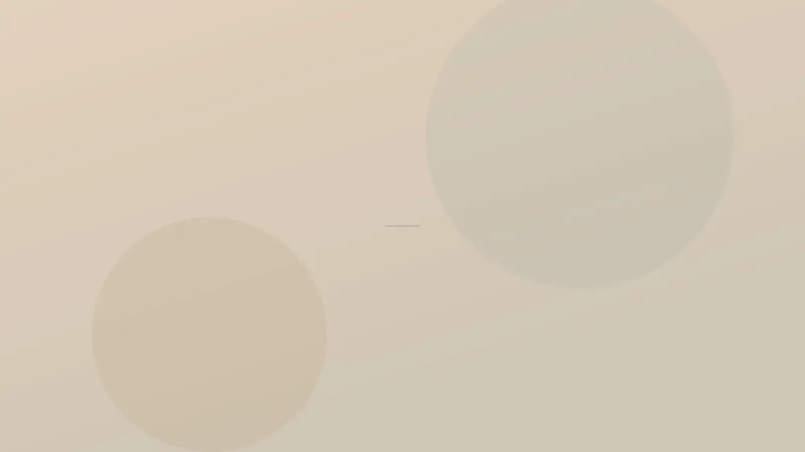

Enjeksiyon Uygulamaları · Kolajen Uyarımı
Etkisi bir günde değil, aylar içinde ortaya çıkar.
Biyostimülan uygulamalar, derinin alt katmanına ya da deri altına verilen ve çevresinde kolajen yapımını uyarması amaçlanan emilebilir maddelerle yapılır. Bu grupta kalsiyum hidroksiapatit ve poli-L-laktik asit sınıfı ürünler yer alır. Değişiklik haftalar ve aylar içinde, kademeli olarak beklenir; aynı gün belirgin bir fark hedeflenmez.

Temsilî görsel · yapay zekâ ile üretildiTanım ve kapsam
Biyostimülan nedir, dolgudan farkı nerede başlar?
“Kolajen aşısı” ya da “kolajen iğnesi” gibi gündelik adlar, dışarıdan kolajen verildiği izlenimini yaratabiliyor. Oysa uygulanan madde kolajen değildir; vücudun kendi kolajenini üretmesini tetiklemesi beklenir.
Bu başlıkta iki ana sınıf bulunur. Kalsiyum hidroksiapatit, kemik ve dişin mineral yapısına benzeyen mikroskobik kürelerin jel bir taşıyıcı içinde verilmesidir; taşıyıcı birkaç ay içinde emilir, küreler ise çevrelerinde bağ dokusu yapımını uyarır ve zamanla parçalanarak uzaklaştırılır. Poli-L-laktik asit, emilebilen cerrahi dikişlerde de kullanılan sentetik bir polimerdir; toz hâlindeki ürün steril suyla sulandırılarak hazırlanır.
İki sınıfta da ortak nokta, uygulamanın bir iskele gibi davranmasıdır: parçacıkların çevresinde fibroblast adı verilen hücrelerin etkinleşmesi ve haftalar içinde yeni kolajen liflerinin örülmesi hedeflenir. Poli-L-laktik asitte uygulama günü görülen dolgunluk, taşıyıcı suyun emilmesiyle birkaç gün içinde geriler; asıl değişiklik daha sonra ve yavaş gelir.
Hangi sınıfın, hangi yoğunlukta ve hangi derinlikte kullanılacağına bölge ve deri kalınlığına bakılarak karar verilir. Hemen hacim veren dolgu uygulamalarından ve cildin nemine yönelik gençlik aşısından farklı bir amaca hizmet eder; zaman zaman aynı planda sırayla yer alsalar da biri ötekinin karşılığı değildir.
Dışarıdan kolajen verilmez: enjekte edilen madde kolajen içermez; kolajen yapımını uyarması amaçlanır ve bu yanıtın gücü kişiden kişiye değişir.
Anında hacim aracı değildir: yakın bir tarihe, örneğin bir düğüne yetişmesi gereken bir değişiklik için uygun seçim olmaz; beklenen etki aylara yayılır.
Sarkmayı kaldıran bir işlem değildir: deri fazlalığı ve dokularda belirgin yer değiştirme varsa cerrahinin yaptığı işi üstlenmez; bu durumda ilgili uzmanlık dalıyla görüşmeniz önerilir.
Eritilerek geri alınan bir ürün değildir: hyalüronik asit dolgularda kullanılan eritici enzim bu maddelere etki etmez. Planlamanın özenle yapılmasının başlıca nedeni budur.
Bu ürün sınıfında bilinen en önemli istenmeyen durum, deri altında elle fark edilen küçük sertlikler (nodül) ve daha seyrek olarak aylar sonra gelişebilen iltihabi düğümlerdir. Ürünün fazla yüzeysel ya da tek noktada yoğun verilmesi, yetersiz sulandırma ve ince, hareketli deri bölgeleri bu riski artırır.
Bu nedenle dudak ve göz altı bölgelerine biyostimülan uygulanmaz; göz çevresinin ince derisinde de tercih edilmez. Bu bölgelerdeki şikâyetler için seçenekler dolgu uygulamaları sayfasındaki ilgili bölümde ve muayenede ayrıca konuşulur. Kalsiyum hidroksiapatit röntgen ve tomografi görüntülerinde seçilebilir; ileride bir görüntüleme yapılacaksa uygulamayı bildirmeniz yorumu kolaylaştırır.
Yüzde incelme ve hacim kaybı sizi rahatsız ediyorsa hacim kaybı ve sarkma, cildin yüzeyindeki donuklukla ilgili bir şikâyetiniz varsa nem kaybı ve donukluk yazımız iyi bir başlangıç noktasıdır. Bölge bazında seçenekler yüz, boyun ve dekolte ile el sayfalarında yer alır.
Seans ve iyileşme
Plan nasıl kurulur, uygulamadan sonraki haftalar nasıl geçer?
Tanışma muayenesi ile uygulama günü ayrıdır; aradaki süre, kararınızı rahatça vermeniz içindir. Bölgenin ne kadar ürün kaldırabileceği ve hangi sınıfın uygun olduğu, deri kalınlığı ve sağlık öykünüzle birlikte tartılır.
Seans aralığı
Bir sonraki seansın kararı, öncekinin kolajen yanıtı belirginleşmeden verilmez; aceleyle eklenen ürün nodül olasılığını artırır.
Çubuk uzunlukları yalnız karşılaştırma içindir; size özel süreler muayenede konuşulur.
- Muayene ve öykü: ilaçlar, otoimmün hastalık, önceki dolgular, iz eğilimi
- Bölge ve ürün sınıfı seçimi; uygulanmayacak alanların belirlenmesi
- Onam görüşmesi: etkinin geç geleceği ve nodül olasılığı yazılı olarak anlatılır
- Poli-L-laktik asit seçildiyse ürünün önceden sulandırılması
- Uygulama, masaj önerisi ve kontrol randevusu
“Az ve aralıklı vermek, bir seansta çok vermekten daha güvenlidir: eksik kalan sonra tamamlanabilir, fazlası geri alınamaz.”

Temsilî görsel · yapay zekâ ile üretildiBölgenizi ve takviminizi konuşalım
Yakında önemli bir gününüz varsa bunu en başta söyleyin.
Randevu talebi- Gebelik ve emzirme: bu dönem boyunca planlanmaz.
- Bölgede süren bir cilt sorunu: uygulanacak alanda sivilce iltihabı, uçuk, egzama atağı, enfeksiyon ya da yara varsa önce cildin toparlanması beklenir.
- Keloid veya kabarık iz eğilimi: bağ dokusu yanıtını uyaran bir uygulamada bu öykü planı doğrudan değiştirir; çoğu zaman uygulama tercih edilmez.
- Aktif otoimmün ya da iltihabi hastalık: lupus ve skleroderma gibi tablolar, süren alevlenmeler ve bağışıklığı baskılayan tedavi alınan dönemler.
- Ürün bileşenlerine karşı bilinen aşırı duyarlılık ya da daha önceki bir enjeksiyondan sonra gelişmiş granülom öyküsü.
- Bölgede daha önce yapılmış kalıcı dolgu (silikon benzeri) ya da ne yapıldığı hatırlanmayan bir uygulama: önce bölge değerlendirilir; çoğu durumda biyostimülan eklenmez.
- Kan sulandırıcı kullanımı veya pıhtılaşma sorunu: iğne noktalarında morluk daha yaygın olabilir; ilacınızın düzenini kendiniz değiştirmeyin, gerekiyorsa reçeteyi yazan hekimle birlikte karar verilir.
- Son haftalarda geçirilen enfeksiyon, yapılan aşı ya da diş tedavisi: bu dönemde geç tip doku tepkilerinin olasılığı arttığı için uygulama birkaç hafta ötelenir.
- 18 yaş altı: planlanmaz.
Uygulamadan sonraki saatlerde ya da günlerde ciltte beyazlaşma veya ağ biçiminde morarma, giderek şiddetlenen ağrı, görmede bulanıklık ya da kayıp, ateş, sıcak ve kızarık bir şişlik gelişirse kontrol gününü beklemeyin. Nefes darlığı, dudakta ya da dilde şişme ve yaygın kurdeşen olursa 112 Acil Çağrı Merkezi’ni arayın ya da en yakın hastanenin acil birimine başvurun.
Seans ve süre
Kaç seans gerekir, değişiklik ne zaman görülür?
Kolajen üretimi yavaş işleyen bir süreç olduğu için ürün tek seferde değil, birkaç oturuma paylaştırılarak verilir; böylece her seansın ardından dokunun nasıl yanıt verdiği görülür. Kalsiyum hidroksiapatit sınıfında bir ya da iki seans çoğu zaman yeterli görülürken, poli-L-laktik asitte daha uzun bir dizi sık kullanılır. Değişiklik genellikle ikinci–üçüncü aydan itibaren belirginleşir ve sonraki aylarda da gelişmeyi sürdürebilir. Yaşlanma durmadığı için elde edilen destek de zamanla azalır; bu hızı yaşınız, deri yapınız, güneş ve sigara alışkanlığınız ve kilo değişimleriniz etkiler. Bazı kişilerde yanıt beklenenden sınırlı kalır; bunu baştan bilmeniz önemlidir. Kontrollerde, izin verirseniz aynı ışıkta çekilen fotoğraflar dosyanıza eklenir; bu fotoğraflar yalnızca takibiniz içindir ve hiçbir yerde yayımlanmaz.
Sık gelen sorular
Bir soru seçin, yanıtını okuyun
Bir adım ötesi
Zamana yayılan bir plan, birlikte kurulur
Beklentiniz, takviminiz ve sağlık öykünüz ilk görüşmede birlikte ele alınır; değerlendirmenin sonunda başka bir yöntemin önerilmesi de mümkündür.
Metni hazırlayan ve tıbbi açıdan gözden geçiren: Uzm. Dr. Rahmi Cebeci (Aile Hekimliği Uzmanı · Medikal Estetik Sertifikalı).
Buradaki anlatım herkese yöneliktir; size özel bir teşhis ya da tedavi planı sunmaz, muayenenin yerini tutmaz. Her uygulamanın etkisi kişiye göre farklı olur.